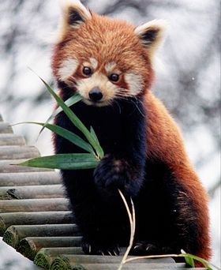

Existem os pandas preto e branco e existem os panda vermelho. Ursos pandas, também chamados de pandas gigantes, são animais mamíferos que se destacam, principalmente, pela sua inconfundível pelagem branca com manchas negras nos olhos e membros, e suas orelhas e ombros negros. Esses animais, apesar de estarem classificados na ordem Carnívora, não têm esse tipo de alimentação, sendo sua dieta baseada no consumo de bambu. A seguir exploraremos mais sobre o modo de vida e as principais características desse mamífero fantástico.
teste letra em italico
teste tag strong